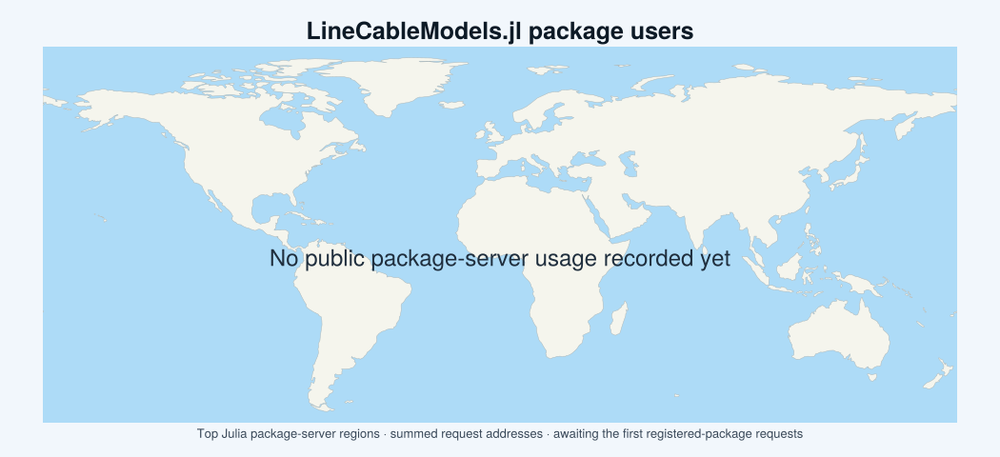

LineCableModels.jl
LineCableModels.jl is a Julia package for computing the series impedances and shunt admittances per unit length of arbitrary arrangements of underground and overhead power cables, with uncertainty propagation. A computation is defined by a problem, which describes the cables, the earth, the operating temperature and the frequencies of interest, and by a formulation, which selects the formulas for each physical contribution. The computation is carried out either by the coaxial analytical backend of the package or by the finite-element backend of the Gmsh extension.
Documentation outline
- Examples: construction of four cable systems and computation of their line parameters.
- Cable data model: materials, shapes, cable parts, designs and systems.
- Line parameters: problems, formulations, computations and results.
- Finite element solver: finite-element backend of the Gmsh extension and its options.
- Uncertainty quantification: propagation of input uncertainties to the line parameters.
- Theory: matrix formulation and formulas of each physical contribution.
- API reference: public names of the package.
- Developers: architecture, rules and conventions of the package.
Main features
- High-fidelity cable modeling. Detailed representation of solid and stranded conductors, with round wires or rectangular strands laid on helices, semicon screens, insulation layers, sheaths, beddings, armors of round wires, jackets and fillers. Any number of cables can be placed in the same cross-section to form a cable system.
- Equivalent tubular representation. Each terminal of a cable is represented by an equivalent tubular conductor that preserves the DC resistance and the geometric mean radius of its regions, including the overlength of the round wires and rectangular strands laid on helices. The relative permeability of the insulation layers is corrected to account for the solenoid effect introduced by the helical path of the current in stranded conductors.
- Internal impedances and admittances. Internal impedances of multilayered coaxial cables based on the surface impedances of Schelkunoff [1] and on the general formulation of Ametani [2], with conductor resistivities corrected to the operating temperature.
- Earth-return impedances and admittances. Earth-return impedances and potential coefficients of underground, overhead and mixed systems in homogeneous earth, computed by a unified formulation with a prescribed longitudinal wavenumber. The formulation includes the solutions of the underground case [3] and of the mixed overhead and underground case [4].
- Phase-domain matrices. Series impedance and shunt admittance matrices of polyphase systems with any number of conductors per phase, with bundling of bonded conductors, Kron elimination of grounded conductors and ideal transposition.
- Finite element modeling. Computation of the same problems on a mesh of the actual cross-section of the cables, by means of Gmsh and GetDP.
- Uncertainty quantification. Linear propagation of the uncertainties of materials, dimensions, positions, earth properties and temperature to the line parameters, by means of the Measurements.jl package.
Installation
Add the registered package to the Julia environment:
pkg> add LineCableModelsThen, in your Julia code, import the package:
using LineCableModelsThe extensions are loaded together with their packages, namely using Measurements for the propagation of uncertainties and using Gmsh for the finite-element backend. The finite-element backend uses the GetDP executable found on PATH when it is suitable, and otherwise downloads GetDP 3.5.0 at its first use.
Work in progress
Many further features have already been prototyped, tested and validated in the development versions of the package, and are being progressively migrated to the stable release. These include:
- Earth-return formulas. Carson, Pollaczek, Wise, Saad, Wedepohl and Wilcox, Gary, Lucca and Xue.
- Earth models. Layered, frequency-dependent and equivalent homogeneous earth.
- Cable components. Lossy dielectrics, pipe-type cables and ducts, sector and Milliken conductors, tapes, rectangular armor wires and compacted conductors.
- Line and cable constants. DC and AC parameters of cable designs, modal decomposition and propagation along lines of finite length.
- Parametric studies. Parameter grids, Monte Carlo evaluation, observables, plotting through Makie, reports and tables.
- Interfaces and libraries. Export to ATPDraw, PSCAD and TRALIN, material and cable libraries, saving and loading.
- Finite element tools. Resuming of runs, mesh reuse, export to ONELAB, field maps and the GMRES solver.
User statistics

The map shows the regions of the Julia package servers from which LineCableModels.jl is downloaded. Each marker gives the sum of the request addresses recorded for the package in that region, over the requests classified as user traffic in the public request logs of the package servers. The map is generated at each build of the documentation.
License
The source code is provided under the BSD 3-Clause License.
Documentation generated using Documenter.jl and Literate.jl.